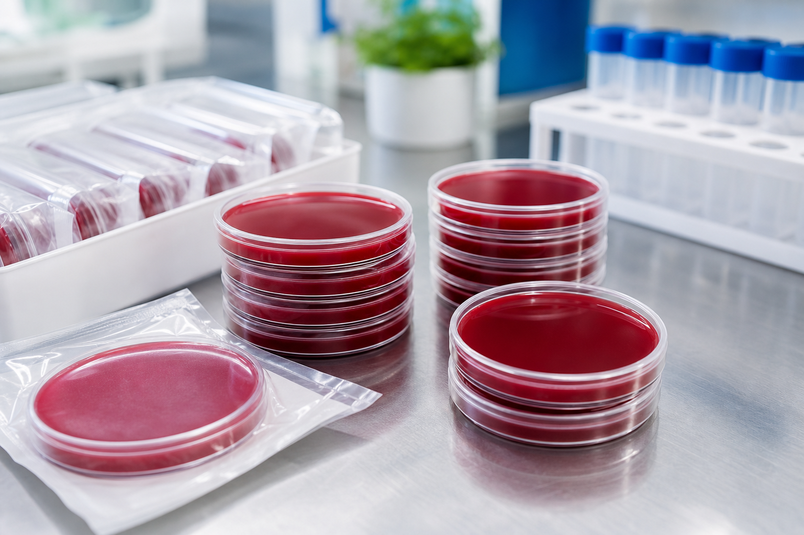

Hematología
Biometrías, controles y perfiles de apoyo para evaluación médica general.
Laboratorio clínico en Guayaquil
Atendemos exámenes de laboratorio, toma de muestras a domicilio y servicios para empresas con un equipo técnico cercano, preciso y confiable.
Exámenes de laboratorio
Biometrías, controles y perfiles de apoyo para evaluación médica general.
Glucosa, perfil lipídico, función renal, función hepática y otros estudios de rutina.
Pruebas especializadas para seguimiento clínico, control preventivo y diagnóstico.
Procesamiento cuidadoso de muestras con orientación clara antes y después de la toma.
Apoyo diagnóstico para cultivos, controles y estudios solicitados por el médico tratante.
Paquetes preocupacionales, ocupacionales y jornadas coordinadas para equipos de trabajo.
Toma de muestras a domicilio
Coordinamos la visita con cita previa para pacientes que necesitan comodidad, privacidad o menor desplazamiento. Es una opción ideal para adultos mayores, niños, controles familiares y pacientes con movilidad limitada.
Atendemos a domicilio en Guayaquil y coordinamos visitas hacia la vía a Samborondón, vía a Salitre y La Joya/Villa Club. La agenda y entrega de resultados se coordinan directamente por WhatsApp.
Agenda por WhatsAppProducto disponible
Seguimos produciendo agares preparados en cajas petri, con énfasis en agar base sangre de cordero. Consulta disponibilidad, volúmenes y tiempos de entrega directamente con nuestro equipo.
Ordena por WhatsApp
Contacto
Lunes a viernes: 8:00 - 17:00
Sábados: bajo cita previa
Nueva Kennedy, Av. San Jorge 428 y la décima. Edificio Polimédico Costales, frente a Fybecca de Plaza Coronel.